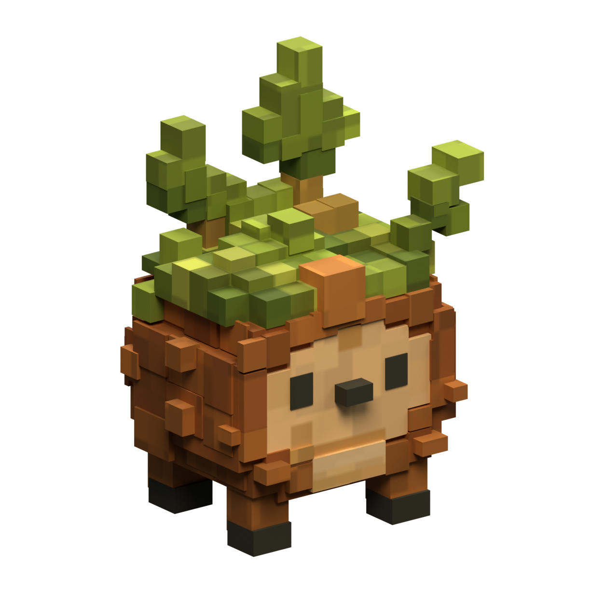
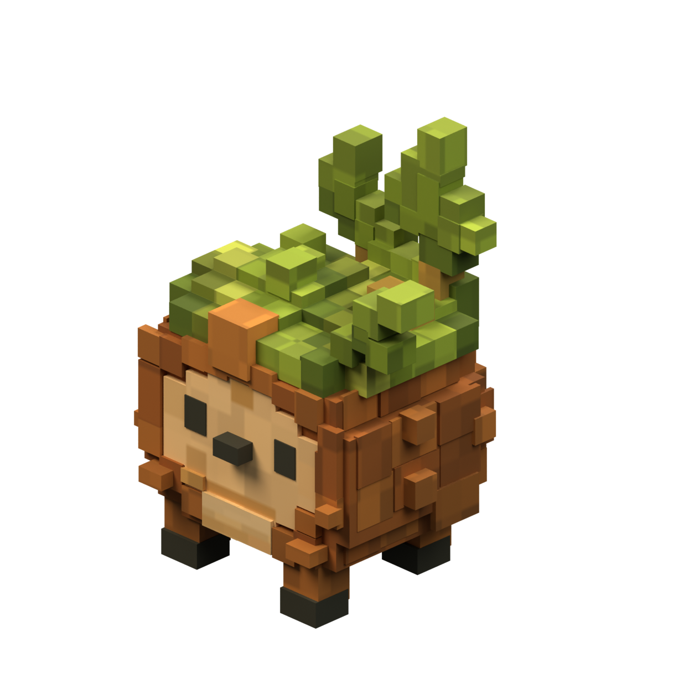
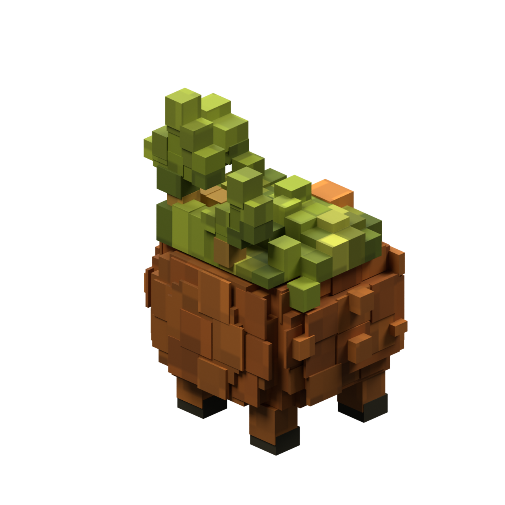
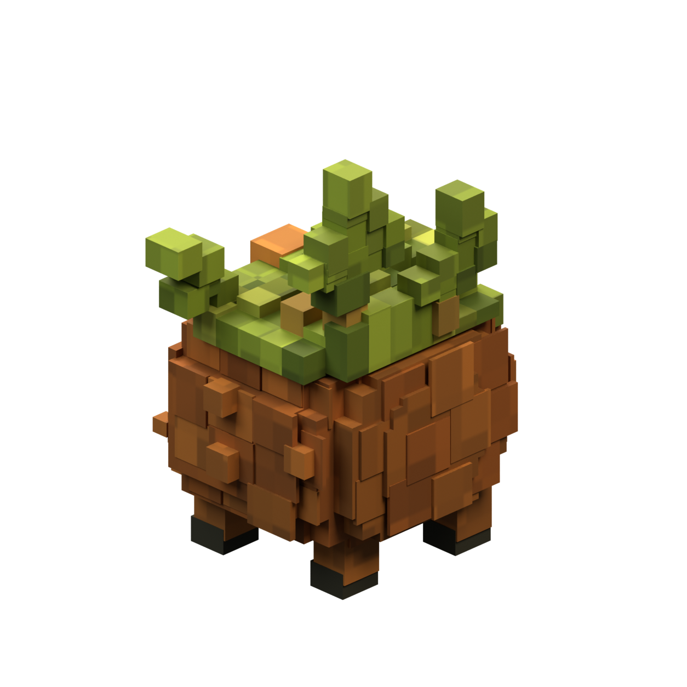
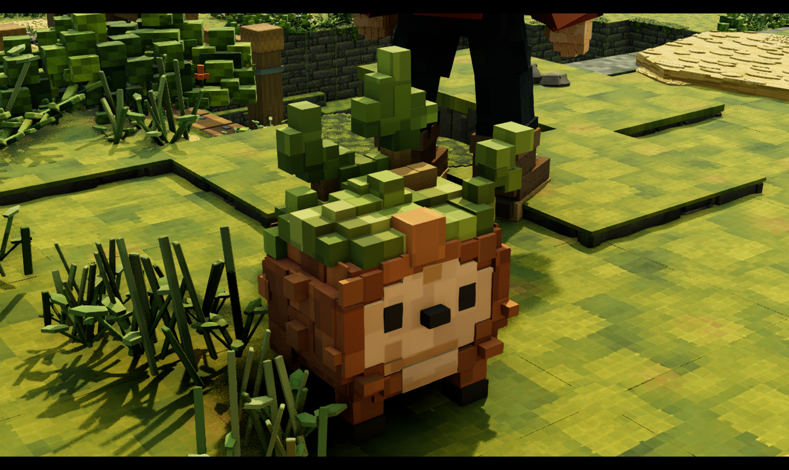
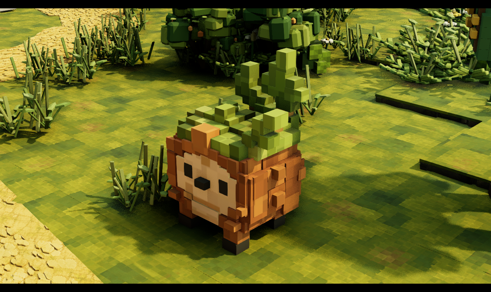
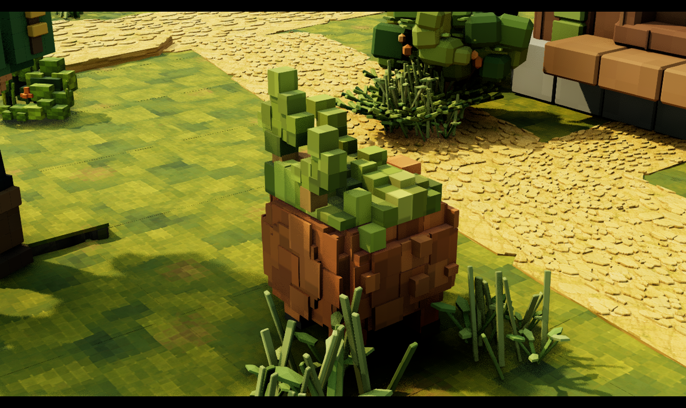
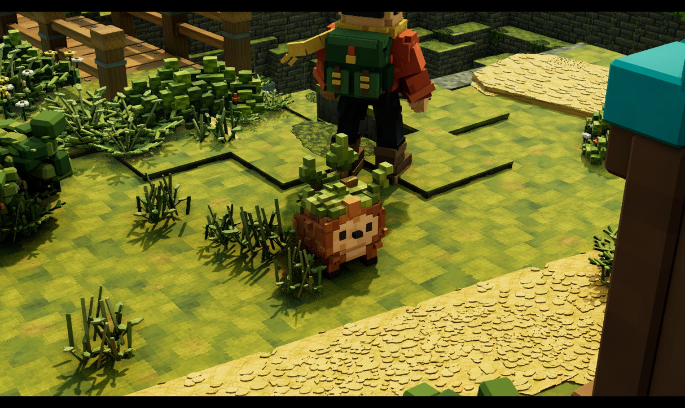

Brambit is now a physical Blender source with an asymmetric moss crown, a raised rear ridge behind the stems, an inset brown saddle with exposed vertical faces, a raised left shoulder and descending moss skirt, a deeper forehead block, stepped body, tan face and belly, charcoal eyes and nose, four short legs and three asymmetrical leafy shoots. Broad staggered side and rear bark planes replace the dense rows of thin tiles, with sparse chunky side knots. The lower tan panels extend to the bottom face boundary. Five closed volumes retain 184 hidden editable construction blocks. Four front bark protrusions were moved and resized to the measured concept corners around the lower face and outer right edge. The crown shoulder was unioned into the moss section, and each of the five evaluated sections now forms a single connected solid. Each leafy shoot now uses planar boundary quads instead of complex Boolean polygons, removing the diagonal shading artifacts in the checked studio views. The leaf joins now meet the front plane without the earlier dark notches, and the join blocks no longer extend beyond the leaf depth. Selected leaf faces have shallow physical relief. All three shoots are individually connected closed solids and preserve their authored bounds within 1.1 micrometres. The model exports to 37,426 triangles with one opaque, nonmetallic material and three packed PNG8 maps. The 1024-pixel pigment and roughness maps include nine authored face and belly regions plus stronger block variation across bark and moss, sampled through planar UVs. The forehead mark is now painted on a continuous surface instead of recessed geometry, and the eyes sit closer to the face. Microscopic Boolean slivers were cleaned from the crown and body before beveling; every authored boundary face now has usable UV area. The feet have been narrowed and repositioned, and the legs shortened. Three visible lower foot corners project within one pixel of approximate landmarks read from the concept; this checks only those corners. The normal Blender project reopened independently. It is saved in HomesteadBlender at 74.78 cm tall, on courtyard grass near the existing explorer. Twenty imported sole samples across four feet match the source and clear the uneven ground by at most 3.28 mm after map reload. This is an initial physical model with substantial fidelity work remaining.







